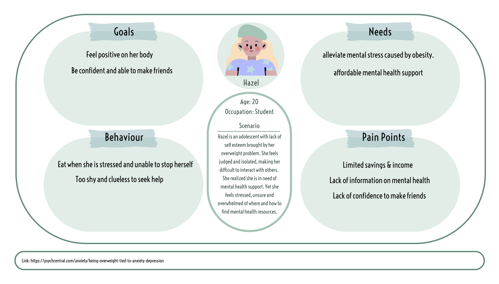
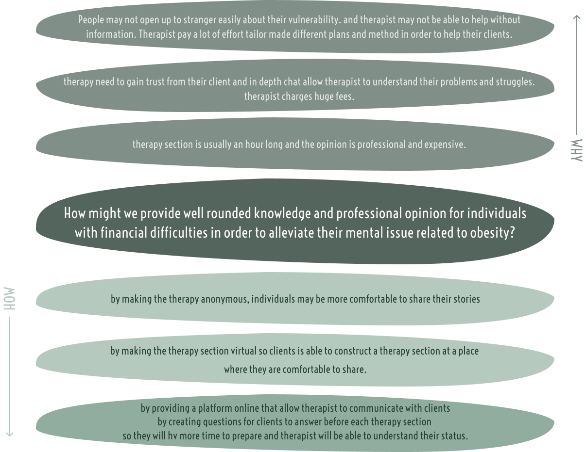
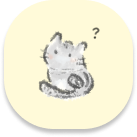
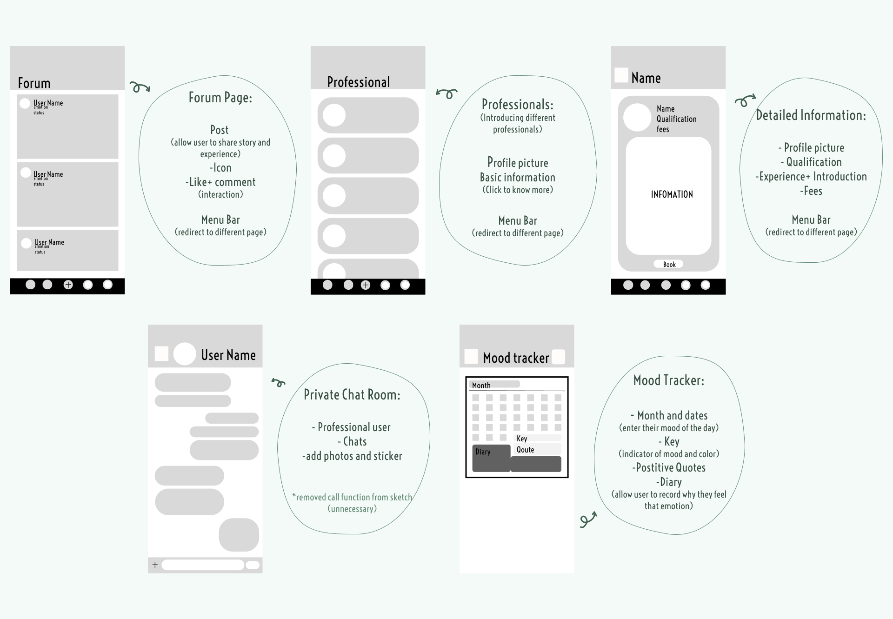

case study on mental health problem assoicated with obesity
5-HT
Overview
5-HT is a mobile application designated to help people that suffer from mental health related obesity by providing professional opinion for individuals to understand the relationship of their physical and mental health.
Role
User
Research
Visual design
Prototyping
Tools
Figma
Zoom
Goodnotes5
Procreate
15 Jan 2024 - 9 Feb 2024
“In 2022, there were around 8.7 million adults in Canada who were obese, while the number of adults were overweight was over ten million.”
- statista, Nov 2023
Project Background and Research
Excess weight, especially obesity, bring more harms than good. It diminishes almost every aspect of health, from reproductive and respiratory function to memory and even mood.
The obese are often judged, criticized or discriminated due to stereotype. Little do they know, obesity can be associated with many factors, including eating disordered cause by mental problem (McCuen-Wurst, et al, 2018).
While Dieting and exercising app are thriving in the market, these app are not as helpful when it comes to helping people understand their mental condition and how their mental problem are related to their physical health. In fact, dietary restraint is associated with increased binge eating episodes among those with Binged-eating disorder, BED(ELRAN-BARAK, Roni, et al., 2015)
By promoting knowledge and information of obesity associated mental disorder, the judgement caused by misunderstanding shall be lifted and citizens will be able to seek help in all kinds of aspect according to their needs.
Interview
here are some key remarks from the interviews.
Interviewwws find unhealthy food are often more tasty and appealing, which healps comfort their mood.
Some interviewees had tried controlling their weight before by dieting. Yet, their body will gain weight once they resume their old eating habit, which is very frustrating.
Interviewees found themselves eating unhealthy food if stressed. and stressed about this habit, creating a vicious circle. They want to get help but never know where to start.
Some interviewees never discovered their physical health are influenced bu their mental status.

Help visualise and prioritise my project
Goal VS Quick Win
The importance of achieving the project goal outweigh some quick wins that require little to no effort.
To help Precisely + Fundamentally
Only by tackling the problem per se will it be effectively alleviated.
All resources will be allocated to accomplish main goal.
Contrains
Difficulties of attracting enough Therapists, Psychologists and Nutritionists
5-HT is created in an attempt to alleviate those who need mental help but clueless on how and where to start, as well as those who are not able to afford it. 5-HT is merely a platform that provide comfortable and encouraging environment for user to seek professional opinions, communicate and support each other. Hence, it needs sufficient amount of Therapist, Psychologist and Nutritionist to tackle their user.
It is not easy to find professionals willing to help without much reward.
Service will be badly affected if the proportion of professional and user is not balanced. Which may then affect the reputation and liability of 5-HT.
How might we provide well rounded knowledge and professional opinion for individuals with financial difficulties in order to alleviate their mental issue related to obesity?
Users will be able to slowly get to know more about themselves and their needs, which is vital for those wanting to become better and healthier.
By creating a loving and welcoming community, User will be receiving encouragements and meet new friends that share similar situations. Ideally, it would inspire users to persist on their goals.
With a new mindset and lifestyle, users shall be able to accept themselves physically and mentally, warranting them confidence and courage.
Persona
Reviewing the response and research data, there are few patterns found. By analyzing and observing their behavior and pain points, a vivid persona, Hazel is created to simulate how and when will they need the app.
Starting from pain points, the needs and goals of persona is naturally born.
User Journey Map
This map help visualize the end to end experience that my persona will go though to accomplish her goal.
Different stages and touch points offer opportunities to explore how to help the persona achieve their goals. By analyzing the user journey map, more precise and thought-through app can be designed to alleviate challenges the persona faced.
Ideation
How might we provide well rounded knowledge and professional opinion for individuals with financial difficulties in order to alleviate their mental issue related to obesity?
Crazy 8
—Using 8 minutes to think of 8 different ideas helps push me beyond my first idea
create a platform where users briefly describe their problem as well as asking questions and psychologist/therapist can answer whenever they want to (therapist can gain exposure. and potential clients)
a platform where people who suffered/suffering from the same mental disorder can share their stories and recommendation.
use text messages instead of a face to face therapy section
providing quotes of psychologist/therapist to help user persist on their goal
a collection of books that covered topic of mental issue generated from obesity
a platform that contains categorized information on mental issues (the symptoms, the cause, methods that may help)
group people with similar mental issue on the same section so they can share the fees together.
offer trial section online or offer 15-30 mins section so it is cheaper and more casual.
Abstraction Laddering
To narrow down solutions and ensure it tackle the problem precisely - To consider the challenge at a different level of focus.

5-HT
5-HT, is another name of Serotonin, which is widely believed to be a contributor to feelings of happiness and joy. It would also influence the long-lasting emotional state, appetite and sleep on individuals. Serotonin's association with mood is most known for various forms of depression, anxiety and bipolar disorders in humans, meaning that individuals who lack sufficient 5-HT in their system are more prone to suffer from these mental disorder.
It is hoped that the app will serve as the function of 5-HT, to bring happiness and joy so as to alleviate their stress and bring mental health.
5-HT is an application that
I. Allow user to better understand their physical and mental status
II. Document users' eating habit and mood change so as to find the linkage in between
III. Chat with different professional according to their needs
- (therapist/psychologist/psychiatrist /nutritionist)
IV. Attract citizens with similar problem
- build a sense of belonging and support
V. Privacy and comfort are assured by using animated avatar to represent user
VI. Raise the public awareness on mental disorder related obesity
With regard to the previous research, there are certain chance in the market where 5-HT can exploit:
There are tremendous amount of app regarding diets, calories and exercise, but there are next to zero app that specifically focus on mental health related obesity.
Besides, by using 5-HT, individuals that are not certain about their emotion status or those still in the beginning stage may improve their emotional state.
User Flow
By drawing out the sitemap, different components and structure are organised. Different functions can be developed to give better experience and smooth flow.
The first step of designing the prototype was a quick sketch. Based on the user flow, five main screen are drawn to visualise the flow on different screen, how they interact with each other and the layout of different feature.
Low-fidelity
Low fidelity wireframe is created based on the quick sketch. At this stage, the basic layout of the app is set. For instance, the menubar to help user navigate from different screen, the transition of different pages and how they can be linked and the basic feature of different screen.